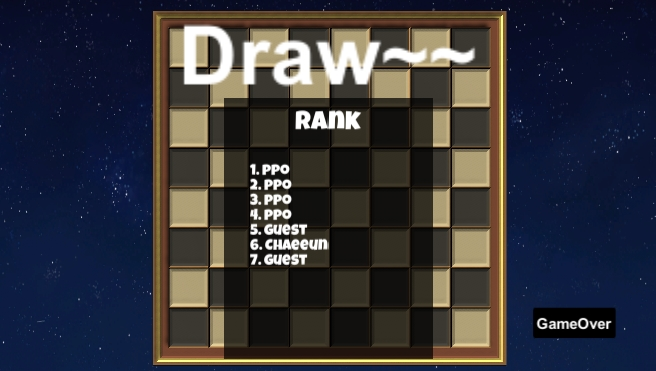
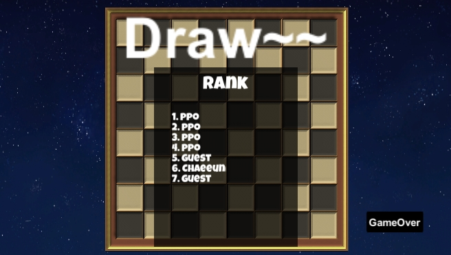

omok처럼 U-Net으로 network를 달고 마지막에 랭킹 불러오는 데이터 또한 NCMB로 저장하여 관리하고 있습니다.
마찬가지로 처음 화면은 게임에 대한 간략한 설명으로 Start버튼을 누르면 컴퓨터와 1대1 대전을 할 것인지, 상대방과의 대전을 할 것인지 고르는 창이 뜹니다.
컴퓨터와 1대1 대전을 고르면 사진3,4와 같이 컴퓨터와 대전을 하게되는데, 돌이 놓을 곳이 없으면 오른쪽에 Click버튼을 누르면 그상태로 게임이 끝나고 남은 돌의 갯수도 승패와 랭킹이 뜨게 됩니다.
상대방과의 대전을 선택하시면 사진5와 같이 실행파일을 두개를 키고 대전 후 각자의 승패와 랭킹이 뜨게됩니다.
주요 코드는 라이브러리로 제작해 놓았고, omok과 다르게 돌을 놓았을 때, 다른 돌이 뒤집히게 만들기 위해 돌에 애니매이션을 달고 마지막에 이벤트로 스크립트를 달아 뒤집히게 만들었습니다.